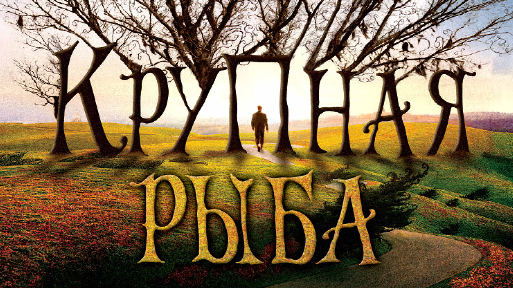
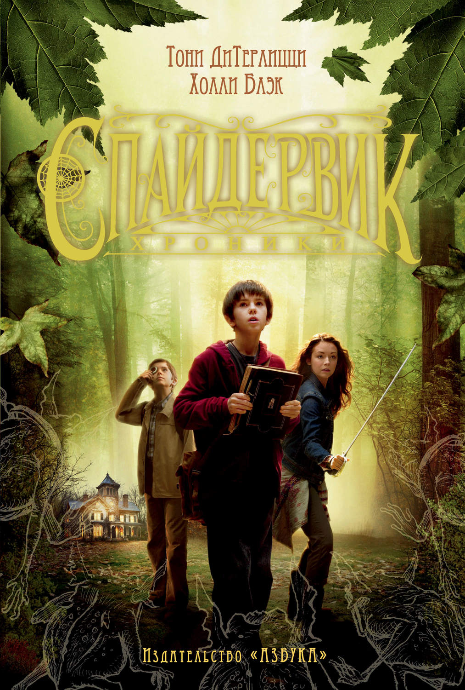

Молодого бизнесмена Адриана Дориа обвиняют в убийстве любовницы, и он решает воспользоваться услугами Вирджинии Гудман, лучшего в стране специалиста по выходу из самых сложных ситуаций. Адриан содержится под домашним арестом, а завтра состоится судебное заседание, поэтому вечером к нему приходит Вирджиния, чтобы придумать наилучшую стратегию защиты. Для неё это последнее дело, и она не собирается его проигрывать.
В основу этой приключенческой ленты положен роман Дэниела Уоллеса «Большая рыба: роман мифических пропорций». Умирает отец, о жизни которого сын хочет узнать как можно больше, собирая истории о нем. Сын пытается воссоздать ускользающую жизнь отца в серии легенд и мифов, которые тот придумывает на основе разрозненных фактов. Взлеты и падения в жизни человека в итоге предстают в неожиданном ракурсе.
Когда семейство Грейс переезжает в старый дом, стоящий на окраине, начинают твориться странные вещи. Пытаясь понять, в чем дело, Джаред обнаруживает дневник Артура Спайдервика и открывает невероятную правду о поместье: здесь находится скрытая от глаз таинственная страна, населенная фантастическими созданиями! Стремясь защитить свой секрет, Джаред, его сестра и брат-близнец переживают незабываемые приключения.
